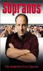

What is this site?
Stephen's Profile
Browser Extension
Stephen Klancher
Recent
Overall
Year Overview
Series
Lists
The Sopranos
List contains: 86 items, 1.4 hours.
Seasons:
1
|
2
|
3
|
4
|
5
|
6
|
Title Search (4+ characters):
Group:
None
Example Group: Me and Stephen
Who's seen it:
No filter
Everyone
No One
Anyone
Anyone Has Not
Who's commented:
No filter
Everyone
No One
Anyone
Anyone Has Not
Netflix:
No Filter
Available for Instant Watch
Netflix Link Known
Netflix Link Unknown
Missing Data:
No Filter
Runtime
Season
Release Year (YYYY) or Decade (YYYx):
Sort:
Normal
Newest Episodes First
Episodes in Order
Recently Watched First
Watched in Order
Newest Releases First
Releases in Order
Stephen Klancher
...has seen 86
...has seen 1.4 hours
Timeline
Most Recent:
Made in America

Season 1
The Sopranos (1999)
Airs on 1999-01-10
S1 - E1 of
The Sopranos
Stephen Klancher
:
April 19, 2017
46 Long (1999)
Airs on 1999-01-17
S1 - E2 of
The Sopranos
Stephen Klancher
:
April 20, 2017
Denial, Anger, Acceptance (1999)
Airs on 1999-01-24
S1 - E3 of
The Sopranos
Stephen Klancher
:
April 21, 2017
Meadowlands (1999)
Airs on 1999-01-31
S1 - E4 of
The Sopranos
Stephen Klancher
:
April 21, 2017
College (1999)
Airs on 1999-02-07
S1 - E5 of
The Sopranos
Stephen Klancher
:
April 30, 2017
Pax Soprana (1999)
Airs on 1999-02-14
S1 - E6 of
The Sopranos
Stephen Klancher
:
May 1, 2017
Down Neck (1999)
Airs on 1999-02-21
S1 - E7 of
The Sopranos
Stephen Klancher
:
May 4, 2017
The Legend of Tennessee Moltisanti (1999)
Airs on 1999-02-28
S1 - E8 of
The Sopranos
Stephen Klancher
:
May 4, 2017
Boca (1999)
Airs on 1999-03-07
S1 - E9 of
The Sopranos
Stephen Klancher
:
May 5, 2017
A Hit Is a Hit (1999)
Airs on 1999-03-14
S1 - E10 of
The Sopranos
Stephen Klancher
:
May 5, 2017
Nobody Knows Anything (1999)
Airs on 1999-03-21
S1 - E11 of
The Sopranos
Stephen Klancher
:
May 6, 2017
Isabella (1999)
Airs on 1999-03-28
S1 - E12 of
The Sopranos
Stephen Klancher
:
May 6, 2017
I Dream of Jeannie Cusamano (1999)
Airs on 1999-04-04
S1 - E13 of
The Sopranos
Stephen Klancher
:
May 7, 2017
Season 2
Guy Walks into a Psychiatrist's Office (2000)
Airs on 2000-01-16
S2 - E1 of
The Sopranos
Stephen Klancher
:
May 8, 2017
Do Not Resuscitate (2000)
Airs on 2000-01-23
S2 - E2 of
The Sopranos
Stephen Klancher
:
May 9, 2017
Toodle-Fucking-Oo (2000)
Airs on 2000-01-30
S2 - E3 of
The Sopranos
Stephen Klancher
:
May 11, 2017
Commendatori (2000)
Airs on 2000-02-06
S2 - E4 of
The Sopranos
Stephen Klancher
:
May 12, 2017
Big Girls Don't Cry (2000)
Airs on 2000-02-13
S2 - E5 of
The Sopranos
Stephen Klancher
:
May 13, 2017
The Happy Wanderer (2000)
Airs on 2000-02-20
S2 - E6 of
The Sopranos
Stephen Klancher
:
May 14, 2017
D-Girl (2000)
Airs on 2000-02-27
S2 - E7 of
The Sopranos
Stephen Klancher
:
May 15, 2017
Full Leather Jacket (2000)
Airs on 2000-03-05
S2 - E8 of
The Sopranos
Stephen Klancher
:
May 17, 2017
From Where to Eternity (2000)
Airs on 2000-03-12
S2 - E9 of
The Sopranos
Stephen Klancher
:
May 18, 2017
Bust Out (2000)
Airs on 2000-03-19
S2 - E10 of
The Sopranos
Stephen Klancher
:
May 19, 2017
House Arrest (2000)
Airs on 2000-03-26
S2 - E11 of
The Sopranos
Stephen Klancher
:
May 21, 2017
The Knight in White Satin Armor (2000)
Airs on 2000-04-02
S2 - E12 of
The Sopranos
Stephen Klancher
:
May 22, 2017
Funhouse (2000)
Airs on 2000-04-09
S2 - E13 of
The Sopranos
Stephen Klancher
:
May 22, 2017
Season 3
Mr. Ruggerio's Neighborhood (2001)
Airs on 2001-03-04
S3 - E1 of
The Sopranos
Stephen Klancher
:
May 23, 2017
Proshai, Livushka (2001)
Airs on 2001-03-04
S3 - E2 of
The Sopranos
Stephen Klancher
:
May 24, 2017
Fortunate Son (2001)
Airs on 2001-03-11
S3 - E3 of
The Sopranos
Stephen Klancher
:
May 25, 2017
Employee of the Month (2001)
Airs on 2001-03-18
S3 - E4 of
The Sopranos
Stephen Klancher
:
May 26, 2017
Another Toothpick (2001)
Airs on 2001-03-25
S3 - E5 of
The Sopranos
Stephen Klancher
:
May 28, 2017
University (2001)
Airs on 2001-04-01
S3 - E6 of
The Sopranos
Stephen Klancher
:
May 29, 2017
Second Opinion (2001)
Airs on 2001-04-08
S3 - E7 of
The Sopranos
Stephen Klancher
:
May 30, 2017
He Is Risen (2001)
Airs on 2001-04-15
S3 - E8 of
The Sopranos
Stephen Klancher
:
May 31, 2017
The Telltale Moozadell (2001)
Airs on 2001-04-22
S3 - E9 of
The Sopranos
Stephen Klancher
:
June 1, 2017
To Save Us All from Satan's Power (2001)
Airs on 2001-04-29
S3 - E10 of
The Sopranos
Stephen Klancher
:
June 2, 2017
Pine Barrens (2001)
Airs on 2001-05-06
S3 - E11 of
The Sopranos
Stephen Klancher
:
June 2, 2017
Best episode with crazy Paulie.
Amour Fou (2001)
Airs on 2001-05-13
S3 - E12 of
The Sopranos
Stephen Klancher
:
June 3, 2017
Army of One (2001)
Airs on 2001-05-20
S3 - E13 of
The Sopranos
Stephen Klancher
:
June 4, 2017
Season 4
For All Debts Public and Private (2002)
Airs on 2002-09-15
S4 - E1 of
The Sopranos
Stephen Klancher
:
June 6, 2017
No-Show (2002)
Airs on 2002-09-22
S4 - E2 of
The Sopranos
Stephen Klancher
:
June 8, 2017
Christopher (2002)
Airs on 2002-09-29
S4 - E3 of
The Sopranos
Stephen Klancher
:
June 9, 2017
The Weight (2002)
Airs on 2002-10-06
S4 - E4 of
The Sopranos
Stephen Klancher
:
June 12, 2017
Pie-O-My (2002)
Airs on 2002-10-13
S4 - E5 of
The Sopranos
Stephen Klancher
:
June 13, 2017
Everybody Hurts (2002)
Airs on 2002-10-20
S4 - E6 of
The Sopranos
Stephen Klancher
:
June 14, 2017
Watching Too Much Television (2002)
Airs on 2002-10-27
S4 - E7 of
The Sopranos
Stephen Klancher
:
June 15, 2017
Mergers and Acquisitions (2002)
Airs on 2002-11-03
S4 - E8 of
The Sopranos
Stephen Klancher
:
June 16, 2017
Whoever Did This (2002)
Airs on 2002-11-10
S4 - E9 of
The Sopranos
Stephen Klancher
:
June 17, 2017
The Strong, Silent Type (2002)
Airs on 2002-11-17
S4 - E10 of
The Sopranos
Stephen Klancher
:
June 18, 2017
Calling All Cars (2002)
Airs on 2002-11-24
S4 - E11 of
The Sopranos
Stephen Klancher
:
June 18, 2017
Eloise (2002)
Airs on 2002-12-01
S4 - E12 of
The Sopranos
Stephen Klancher
:
June 19, 2017
Whitecaps (2002)
Airs on 2002-12-08
S4 - E13 of
The Sopranos
Stephen Klancher
:
June 19, 2017
Season 5
Two Tonys (2004)
Airs on 2004-03-07
S5 - E1 of
The Sopranos
Stephen Klancher
:
June 20, 2017
Rat Pack (2004)
Airs on 2004-03-14
S5 - E2 of
The Sopranos
Stephen Klancher
:
June 21, 2017
Where's Johnny? (2004)
Airs on 2004-03-21
S5 - E3 of
The Sopranos
Stephen Klancher
:
June 22, 2017
All Happy Families (2004)
Airs on 2004-03-28
S5 - E4 of
The Sopranos
Stephen Klancher
:
June 24, 2017
Irregular Around the Margins (2004)
Airs on 2004-04-04
S5 - E5 of
The Sopranos
Stephen Klancher
:
June 24, 2017
Sentimental Education (2004)
Airs on 2004-04-11
S5 - E6 of
The Sopranos
Stephen Klancher
:
June 25, 2017
In Camelot (2004)
Airs on 2004-04-18
S5 - E7 of
The Sopranos
Stephen Klancher
:
June 25, 2017
Marco Polo (2004)
Airs on 2004-04-25
S5 - E8 of
The Sopranos
Stephen Klancher
:
June 26, 2017
Unidentified Black Males (2004)
Airs on 2004-05-02
S5 - E9 of
The Sopranos
Stephen Klancher
:
June 27, 2017
Cold Cuts (2004)
Airs on 2004-05-09
S5 - E10 of
The Sopranos
Stephen Klancher
:
June 28, 2017
The Test Dream (2004)
Airs on 2004-05-16
S5 - E11 of
The Sopranos
Stephen Klancher
:
June 29, 2017
Long Term Parking (2004)
Airs on 2004-05-23
S5 - E12 of
The Sopranos
Stephen Klancher
:
June 30, 2017
All Due Respect (2004)
Airs on 2004-06-06
S5 - E13 of
The Sopranos
Stephen Klancher
:
June 30, 2017
Season 6
Members Only (2006)
Airs on 2006-03-12
S6 - E1 of
The Sopranos
Stephen Klancher
:
July 1, 2017
Join the Club (2006)
Airs on 2006-03-19
S6 - E2 of
The Sopranos
Stephen Klancher
:
July 1, 2017
Mayham (2006)
Airs on 2006-03-26
S6 - E3 of
The Sopranos
Stephen Klancher
:
July 3, 2017
The Fleshy Part of the Thigh (2006)
Airs on 2006-04-02
S6 - E4 of
The Sopranos
Stephen Klancher
:
July 4, 2017
Mr. and Mrs. Sacramoni Request (2006)
Airs on 2006-04-09
S6 - E5 of
The Sopranos
Stephen Klancher
:
July 5, 2017
Live Free or Die (2006)
Airs on 2006-04-16
S6 - E6 of
The Sopranos
Stephen Klancher
:
July 5, 2017
Luxury Lounge (2006)
Airs on 2006-04-23
S6 - E7 of
The Sopranos
Stephen Klancher
:
July 6, 2017
Johnny Cakes (2006)
Airs on 2006-04-30
S6 - E8 of
The Sopranos
Stephen Klancher
:
July 6, 2017
The Ride (2006)
Airs on 2006-05-07
S6 - E9 of
The Sopranos
Stephen Klancher
:
July 7, 2017
Moe n' Joe (2006)
Airs on 2006-05-14
S6 - E10 of
The Sopranos
Stephen Klancher
:
July 7, 2017
Cold Stones (2006)
Airs on 2006-05-21
S6 - E11 of
The Sopranos
Stephen Klancher
:
July 8, 2017
Kaisha (2006)
Airs on 2006-06-04
S6 - E12 of
The Sopranos
Stephen Klancher
:
July 8, 2017
Soprano Home Movies (2007)
Airs on 2007-04-08
S6 - E13 of
The Sopranos
Stephen Klancher
:
July 10, 2017
Stage 5 (2007)
Airs on 2007-04-15
S6 - E14 of
The Sopranos
Stephen Klancher
:
July 10, 2017
Remember When (2007)
Airs on 2007-04-22
S6 - E15 of
The Sopranos
Stephen Klancher
:
July 11, 2017
Chasing It (2007)
Airs on 2007-04-29
S6 - E16 of
The Sopranos
Stephen Klancher
:
July 12, 2017
Walk Like a Man (2007)
Airs on 2007-05-06
S6 - E17 of
The Sopranos
Stephen Klancher
:
July 12, 2017
Kennedy and Heidi (2007)
Airs on 2007-05-13
S6 - E18 of
The Sopranos
Stephen Klancher
:
July 13, 2017
The Second Coming (2007)
Airs on 2007-05-20
S6 - E19 of
The Sopranos
Stephen Klancher
:
July 15, 2017
The Blue Comet (2007)
Airs on 2007-06-03
S6 - E20 of
The Sopranos
Stephen Klancher
:
July 15, 2017
Made in America (2007)
Airs on 2007-06-10
S6 - E21 of
The Sopranos
Stephen Klancher
:
July 15, 2017
Watched an episode not known by IMDb?
Season:
-
Episode:
Date:
Comment: